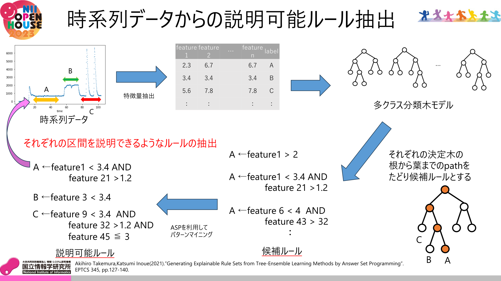

時系列データからの説明可能ルール抽出

大谷将之
研究概要
私は機械学習モデルから説明可能なルールを抽出し、機械学習モデルを解釈可能にすることを目標に研究を行っています。具体的な研究内容としては、”Generating Explainable Rule Sets from Tree-Ensemble Learning Methods by Answer Set Programming”,Akihiro Takemuraの研究を応用して、機械学習と解集合プログラミングを融合させ、時系列データから説明可能なルールを抽出することです。現在はこの手法を応用し、回帰木モデルから、予測値に関するルールを抽出することを目標に研究を行なっています。
研究キーワード
Answer Set Programming (ASP), Decision Tree, Time Series Data, Tree Ensemble Model
参考（推薦）文献
Akihiro Takemura, Katsumi Inoue(2021). "Generating Explainable Rule Sets from Tree-Ensemble Learning Methods by Answer Set Programming". EPTCS 345, pp.127-140.